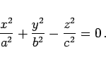
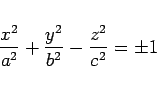

Inhalt Index DeskTop Bronstein

 Geometrie Vektoralgebra und analytische Geometrie Analytische Geometrie des Raumes Flächen 2. Ordnung, Gleichungen in Normalform
Geometrie Vektoralgebra und analytische Geometrie Analytische Geometrie des Raumes Flächen 2. Ordnung, Gleichungen in Normalform


Liegt die Spitze im Koordinatenursprung (linke Abbildung), dann gilt:
|  | (3.434) |
Als Leitkurve kommt eine Ellipse mit den Halbachsen a und b in Betracht, deren Ebene senkrecht zur z-Achse in einer Entfernung c vom Koordinatenursprung liegt. Der Kegel kann in dieser Darstellung als Asymptotenkegel der beiden Hyperboloide mit den Gleichungen
|  | (3.435) |
aufgefaßt werden, dessen Erzeugende sich beiden Hyperboloiden im Unendlichen unbegrenzt nähert (rechte Abbildung). Für a = b ergibt sich ein gerader Kreiskegel.